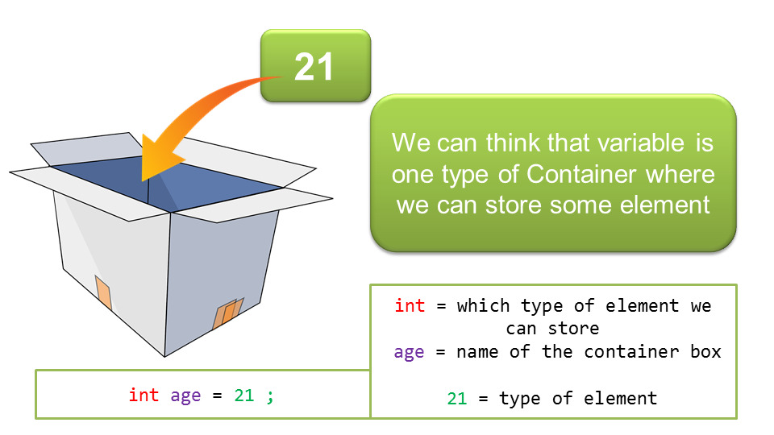

Date: 2025-02-03
Note: We will take breaks at least once an hour
Choose one from the list and work on it solo or with a partner.
Today’s goals are to understand variables, conditionals and loops. You should understand variables completely, including types.
You should also be able to program your own simple video game. We will start to build Pong.
How does this fit into the plan for the semester? Variables and Conditionals (aka “If Statements”) are foundational knowledge for all programming languages. With this basic knowledge you can move on to more advanced concepts in programming.
By default, Processing will create a window of 100 by 100
pixels if you do not set the window size with
size(x, y).
If you do not specify a setup() or draw() function the code will execute once.
The background, if not specified, will be grey aka
background(120).
Last week we covered rectangles, ellipses, points, lines. There are other shapes available such as triangles, quads and arcs.
But you can also make your own custom shape, filled or empty. You do so by starting the shape, declaring all the points (similar to fill-in-the-dots), then closing the shape.
Example
beginShape();
vertex(20, 20);
vertex(40, 20);
vertex(40, 40);
vertex(60, 40);
vertex(60, 60);
vertex(20, 60);
endShape(CLOSE);Info on beginShape
A variable is a container to hold a value in memory.
A variable’s value can be altered.
 image from atnyla.com
Example:
the variable age increases by 1 each year on
your birthday.
Variables are declared (aka created) by first stating
their type, then their name. They must start with a letter
and may only consist of letters, numbers and underscores
(e.g. student_age ).
The type of a variable indicates what you will be storing in it.
int, an integer. For whole numbers such as
-12, 0, 340, 32.
float, a floating point number, more
commonly called a decimal. Examples: 0.005, 75.30,
33333.33333334.
boolean, a variable that can either be true
or false.
Other variable types that we won’t use much in this class but are good to know include char, byte, short, long, double.
You create a variable when you declare it.
You set the value of a variable when you initialize it.
Note: I’ve bolded these words because these are their official names.
Declaring and initializing in two separate steps:
int age; //declares a variable age
age = 20; //initializes the variable ageOR
Declaring and initializing in a single step:
int age = 20; //declare and initialize the variableWhen should you use a variable? When you have to rewrite a particular value multiple times.
Example:
Moving a circle to the right.
int circleX = 20;
void draw(){
ellipse(circleX, 50, 20, 20);
circleX = circleX + 1; //adds 1 to circleX each time it runs
}In this example, take a look at the line
circleX = circleX + 1. The single equal sign
indicates that we are setting a value to a variable. We
evaluate the final result of the calculations to the right
of the equal sign and set the variable to the left of that
equal sign.
random(min,max);Important: random is a float by default!
float crazyNum = random(1,300); //picks a float between 1 and 300To get an integer, cast it (aka converting). Casting is the process of converting between types.
int crazyNum = int(random(1,300));Check the use of nested parenthesis to indicate the order of execution. Start in the inner parenthesis and work out.
Why do we have different variable types?
Not every language has these same goals.
When working with variables, it can be easy to get confused. Many times you are expecting certain variables but you’re seeing something else on your screen. One way to try to figure out what is going on is just to print out what value your variable is currently set to.
Example:
float x;
function setup(){
size(500,500);
}
function draw(){
x = random(500);
ellipse(x,250,30,30);
println("x is currently: "+x);
//this prints out the text and the current value of x
}Conditionals are yes/no questions! Depending on the answer, there may be follow-up code that is executed.
IF this is true, then do this!
if (mouseX < 100){
println("Your cursor is on the left.")
}Example with else:
if (candles < 20){
println("Let's buy a box of candles for the birthday cake");
} else {
println("I'm over it. Let's just buy one of those number candles.");
}Example with multiple options using else if:
if (age > 64){
println("You can retire.");
} else if (age > 18) {
println("You can vote.");
} else {
println("You're in primary school.");
}These are very limited options.
“If this is true AND that is true…”
And is &&
Example
if ((mouseX > 0) && (mouseX < width)){
println("Our mouse is on the screen");
} else {
println("The mouse is offscreen");
}
“If this is true OR that is true…”
OR is ||
Press shift + the key above ENTER, on most keyboards.
Example:
if ((temperature < 32) || (temperature > 100)){
println("This weather is really annoying!");
}Not is !
Example:
if (!mousePressed) {
//this means "if you are NOT pressing the mouse"
background(255);
} else {
background(0);
}For Loops <— this one is important!